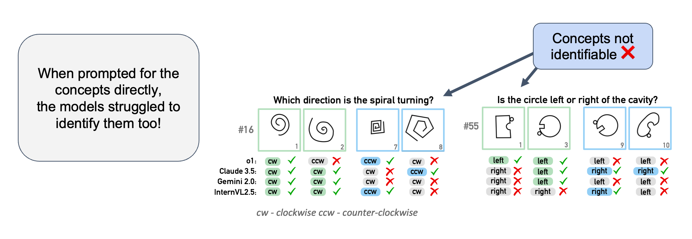

Recently, newly developed Vision-Language Models (VLMs), such as OpenAI's o1, have emerged, seemingly demonstrating advanced reasoning capabilities across text and image modalities. However, the depth of these advances in language-guided perception and abstract reasoning remains underexplored, and it is unclear whether these models can truly live up to their ambitious promises. To assess the progress and identify shortcomings, we enter the wonderland of Bongard problems, a set of classic visual reasoning puzzles that require human-like abilities of pattern recognition and abstract reasoning. With our extensive evaluation setup, we show that while VLMs occasionally succeed in identifying discriminative concepts and solving some of the problems, they frequently falter. Surprisingly, even elementary concepts that may seem trivial to humans, such as simple spirals, pose significant challenges. Moreover, when explicitly asked to recognize ground truth concepts, they continue to falter, suggesting not only a lack of understanding of these elementary visual concepts but also an inability to generalize to unseen concepts. We compare the results of VLMs to human performance and observe that a significant gap remains between human visual reasoning capabilities and machine cognition.
Our experiments indicate that VLMs are still far from mastering Bongard problems. The best-performing model in our paper, o1, solved only 43 out of 100 problems. We also tested the newer model, o3, which did slightly better with 53 solved. However, nearly half the problems remain unsolved.
In our experiments, we also compared the performance of VLMs to human participants. We observe that the best human performance surpasses VLM performance by far. Interestingly, when looking at the number of BPs that have been solved at least once by any human or model, the humans were able to solve 95 of the 100 problems.
We observed that the investigated VLMs performed poorly on the BP dataset. This could be due to difficulties in accurately perceiving the diagrams, as well as reasoning failures, such as incorrectly formulating rules that apply differently to each side. To investigate this in more detail, we designed a follow-up task where we asked the VLMs to detect the concepts of the Bongard Problems. The results show that the VLMs struggle to detect even the most basic concepts, such as simple spirals, which are trivial for humans.
Looking at the intersection of both tasks, we find that the intersection is surprisingly small. Intuitively, one might expect that if a model can solve a BP in the first place (Task 1), it should also be able to detect the concepts (Task 2) for this BP.This large discrepancy highlights a surprising gap between recognizing correct classifications and effectively applying that knowledge in problem-solving.
@article{wust2025bongard,
title={Bongard in Wonderland: Visual Puzzles that Still Make AI Go Mad?},
author={W{\"u}st, Antonia and Tobiasch, Tim and Helff, Lukas and Ibs, Inga and Stammer, Wolfgang and Dhami, Devendra S and Rothkopf, Constantin A and Kersting, Kristian},
journal={nternational Conference on Machine Learning (ICML)},
year={2025}
}